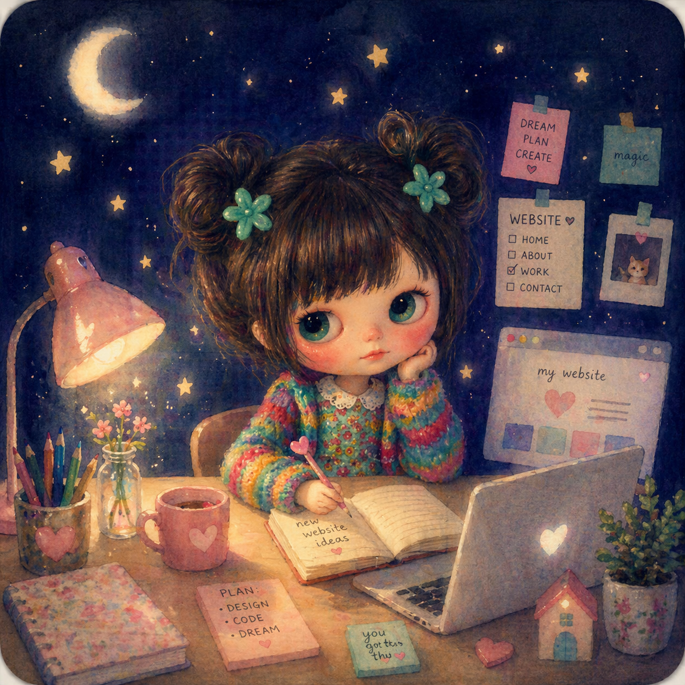

With a Master's in Child Psychology, I build digital experiences, write interactive fiction, and map out the best places to study in London.
Read My CV
A custom-built application mapping study-friendly environments across London, rated on atmospheric and productivity metrics.
How do we figure out who we are when half our lives exist on screens? Dive into my academic exploration of identity formation and emerging adulthood in the digital age.
Character-driven short stories and choice-based narrative experiences built in Twine, exploring human connection.
Carbonara Buldak Noodles (strictly half-spice, for survival). But when homesickness strikes, the only cure is chewy Southeast Chinese magic: Sticky Rice (糯米飯) and sweet Osmanthus Rice Cake (桂花炒年糕).
Because it is a vibrant, buzzing labyrinth where anyone can be anything without judgment. Every street corner is a beautiful collision of cultures, architecture, and histories coexisting in one space. It is the city that built my psychology foundation, and the perfect backdrop for someone who thrives on diverse energy.
Whether through clinical psychology, web development, interactive words, or art, my ultimate goal is to connect with people. As an INFP, I try to find profound meaning in every fleeting moment of learning and experiencing.
Solo-travelling the globe, cooking, and singing. Digitally, you'll find me playing LOL (a dedicated Katarina main and I only play cutesy champs :p) while rewatching Arcane. I also love to sketch—you can peek at my drawings here!
I actually deeply appreciate the "lows" in life. As difficult as they are to bear in the moment, they are the necessary shadows that make the "highs" so incredibly meaningful and bright.
Speed-run Face Recognition. I once memorised ten babies' faces and names within 15 minutes of meeting them unintentionally. Also equipped with max-level spontaneity.